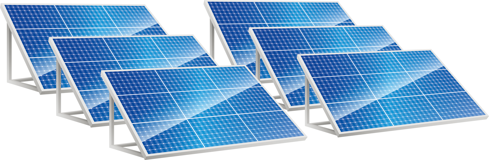
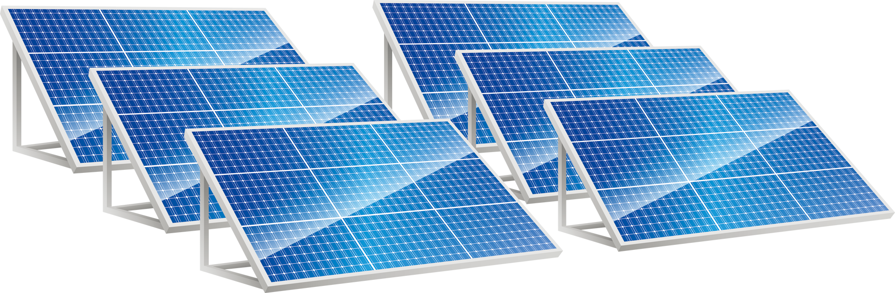

La energía solar es un tipo clave de energía renovable, fundamental para la transición energética hacia economías más respetuosas con el medioambiente. Gracias a los avances tecnológicos, se ha convertido en una de las fuentes renovables más eficientes y económicas. El uso de energía solar no solo reduce el impacto ambiental, sino que también impulsa la inversión, genera empleo y mejora la competitividad de las empresas. Por su importancia, es crucial conocer sus diferentes tipos, funcionamiento y cómo expandir su uso en la generación eléctrica.
La energía solar se obtiene de la radiación electromagnética del sol (luz, calor, UV). Se capta mediante paneles solares o colectores para dos usos principales: generar calor (sistema fototérmico) o producir electricidad (sistema fotovoltaico).
La energía solar se clasifica según su método de captación y uso, siendo la fotovoltaica y la térmica las más conocidas, y están directamente relacionadas con los diferentes tipos de paneles solares. Te presentamos los principales tipos de energía solar:

La energía solar fotovoltaica produce electricidad utilizando módulos fotovoltaicos. Estos módulos contienen células que transforman la radiación solar directamente en corriente eléctrica mediante la ionización y liberación de electrones al recibir la luz.
La energía fotovoltaica ha recibido un impulso con la llegada de las comunidades solares y el ahorro energético. Además, la llamada energía agrovoltaica también está adquiriendo relevancia dentro del sector agrícola.
La energía solar térmica utiliza colectores o captadores solares para transformar la radiación en calor. Este calor se utiliza para calentar agua que luego sirve para uso higiénico, residencial o industrial.
Existe una variante llamada termo-solar de concentración (CSP):
La energía solar pasiva aprovecha directamente la energía del sol (luz y calor) sin necesidad de transformarla, utilizando soluciones constructivas y materiales.
Aplicaciones clave:
La energía solar híbrida combina la energía solar (fotovoltaica o térmica) con otra fuente de energía renovable (principalmente eólica) para lograr una mayor y más estable aportación energética.
Combinación más habitual: